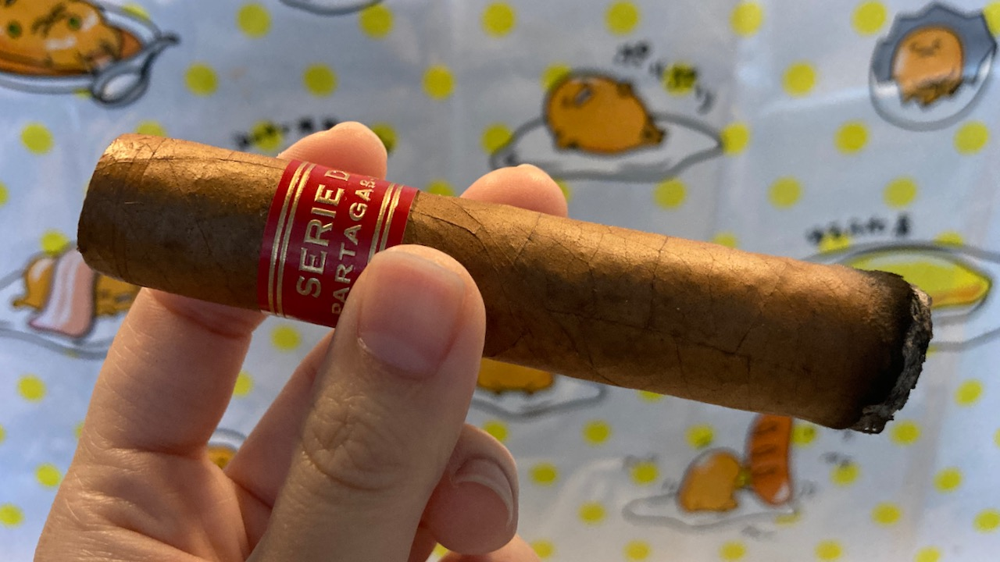
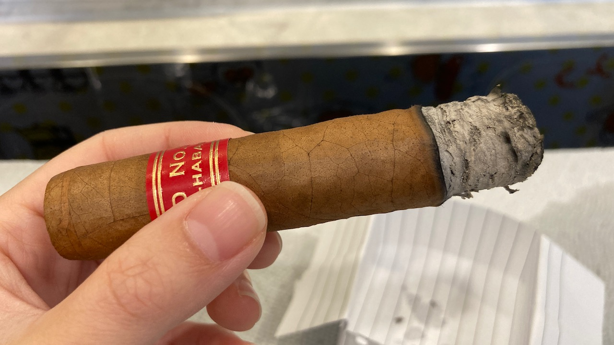

Cigar Review: Partagas Serie D No. 5
Partagas D5 is a pretty famous small cigar. It is a pretty casual smoke at 11cm by 50 ring gauge. However, it's not my favourite. 😦
The construction of the cigar feels solid. It feels very well-constructed, well-packed in hands. The draw is pretty much perfect to me with the straight cut. It was not too firm and not too loose. 👌
I'm kinda sad to say that I just didn't taste much flavours from this cigar. Maybe just cedary, woody, standard type of burning tobacco? I did tasted something sour in the middle for a little bit (as in like maybe 3 puffs). The rest was just tasted like regular tobacco smoke to me. No interesting flavours or what not. :\
 
The burn of the cigar looks pretty clean. The ash could grow pretty long and I took some pics of it. I was so afraid that it was gonna fall all the time, but looking at these pic, I feel like I probably could have let it grew a little bit longer before I tapped it off back then. 😬
Since I was smoking this one indoor, I was able to let it sit to cool it down and prevent it from over-heating. This is not a cigar to enjoy at home though because it produces a massive amount of smoke output. I didn't really like that part either.
I pretty much ended the cigar right here. The burn at the end was extremely crooked. I'm not sure why, but I had to touch it up so many times until I finally gave up. It was a good smoke, but with its lack of flavours, it's just not the greatest that I have.
Thank you for reading! If you enjoy this post, please consider supporting this website and allow me to share more of my cigar journey with you. Thank you again and have a beautiful day! ☀